Feed it a source
Start from a built-in gradient, drop in any image, or point it at a video. The source is shared by every style, so one picture can wear a dozen looks.
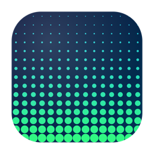
DotStudioRun any gradient, image, or video through dither, ASCII, halftone, VHS and 30+ live effects — then save it as a Mac screensaver.
A single drifting gradient, transformed effect by effect as you scroll — dots to glyphs to grain to heat to light. One picture, never the same twice.
Every frame below is a real export from DotStudio — one of the screensavers that come pre-installed. Drag a gradient, image or clip underneath and the same look paints over it.
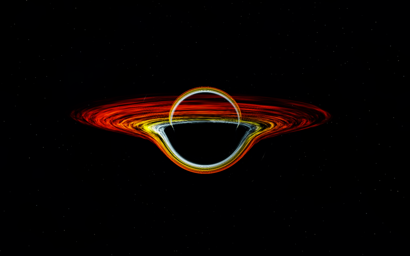
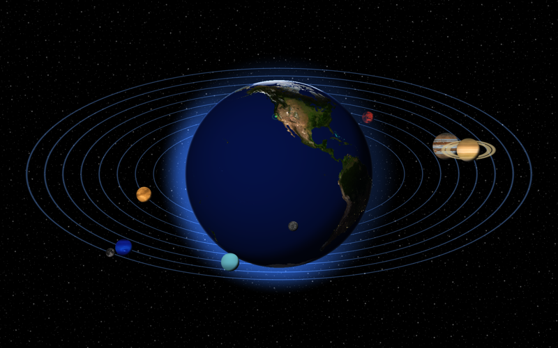
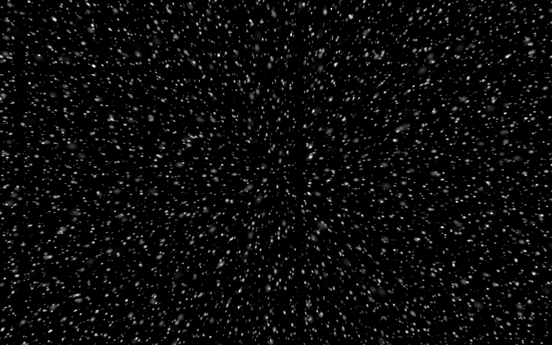
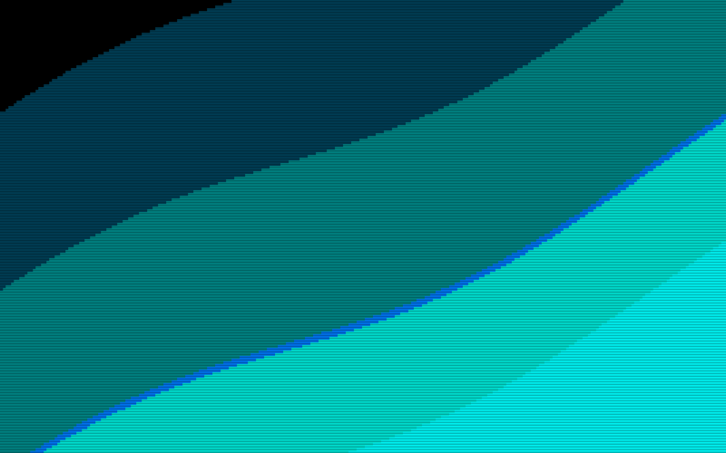
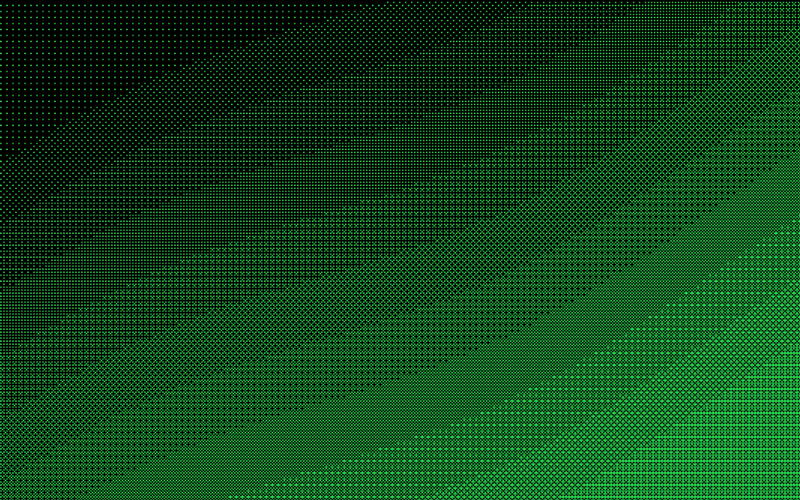
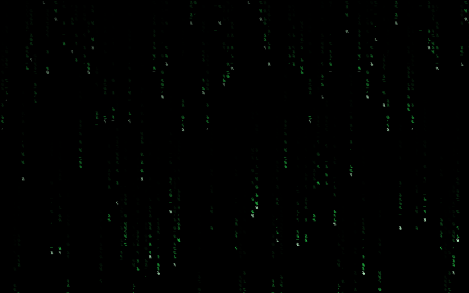
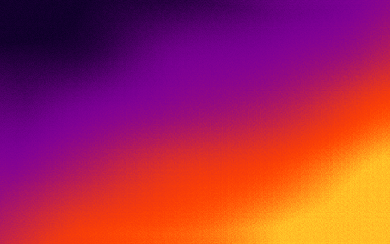
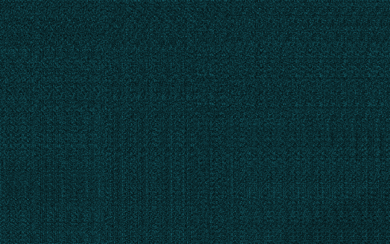
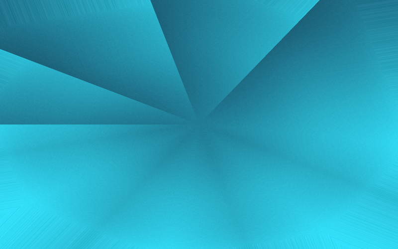
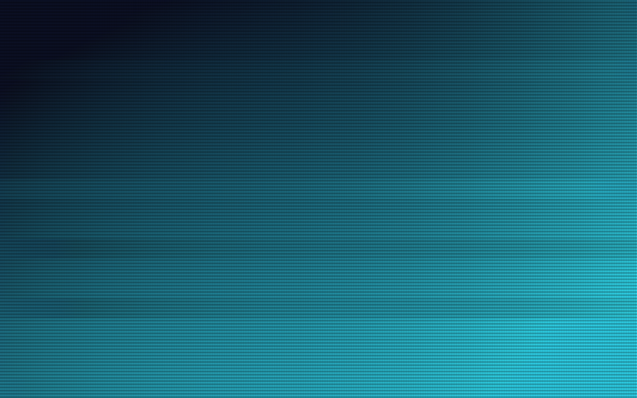
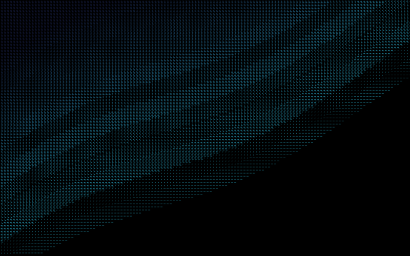
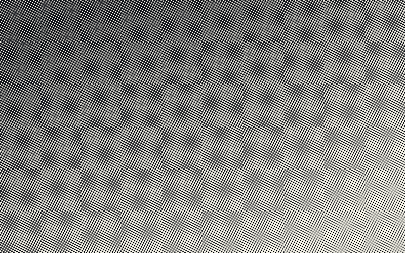
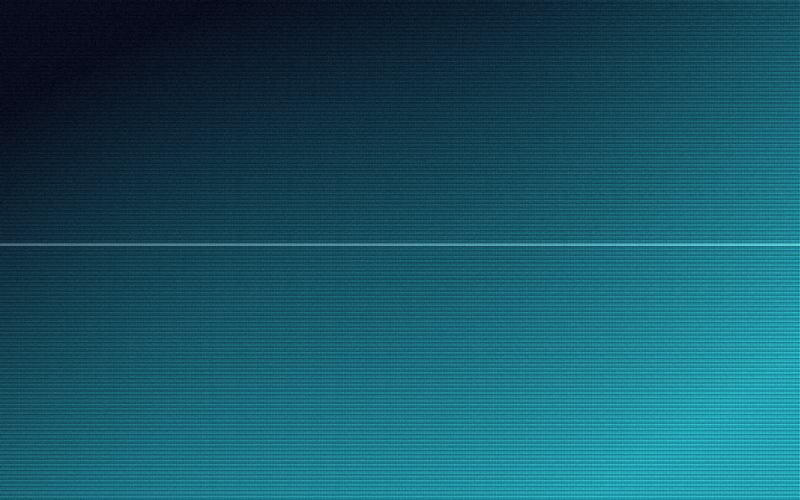
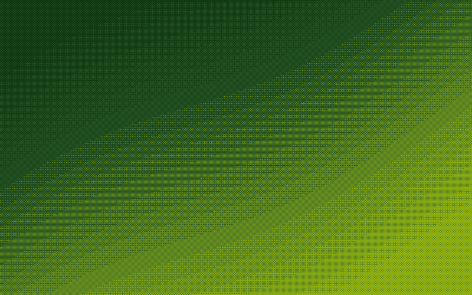
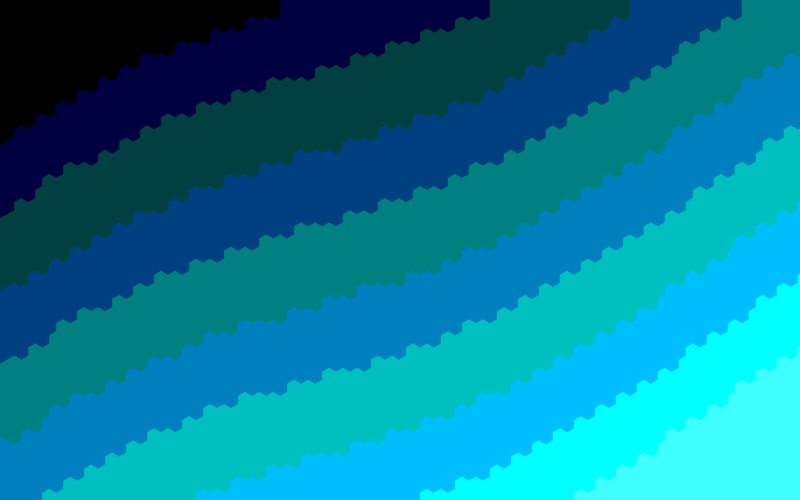
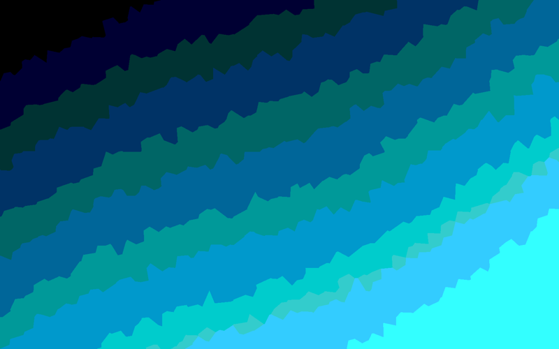
This is the app's core loop, on the page. Pick a source, choose an effect, drag the dials — the panel re-renders live. When you like it, the real app saves it as a screensaver and pins it to your desktop.
Start from a built-in gradient, drop in any image, or point it at a video. The source is shared by every style, so one picture can wear a dozen looks.
Add effects to a stack — they apply top to bottom. Dither into halftone into scanlines. Drag the dials, swap the palette, watch it move. Save it as a named screensaver.
One click copies a real .saver into your Screen Savers folder and opens Wallpaper settings. Pick “DotStudio” once — after that you switch screensavers right inside the app.
Every effect, grouped the way the app groups them. Stack as many as you like.
Download the latest build, drop it in Applications, and turn your desktop into a gallery that never repeats.
Download v1.0.0Unsigned for now: if macOS blocks the first launch, right-click DotStudio.app → Open. macOS 14+.